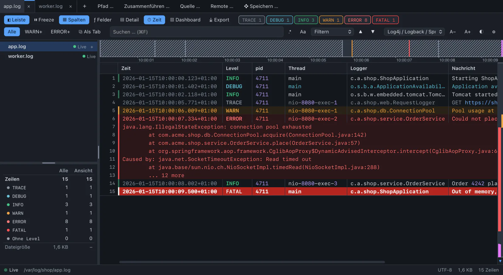
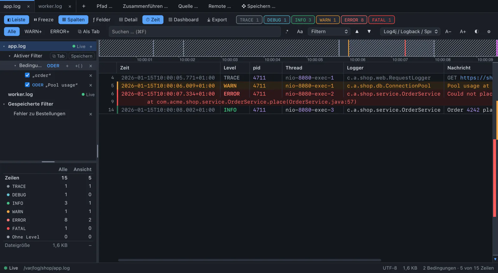
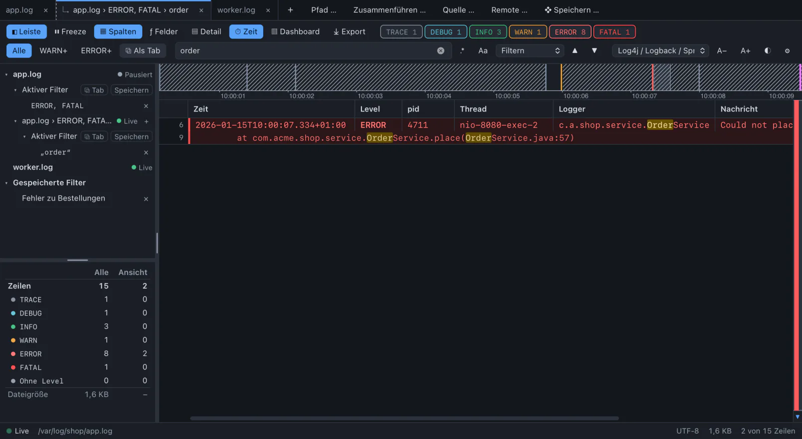
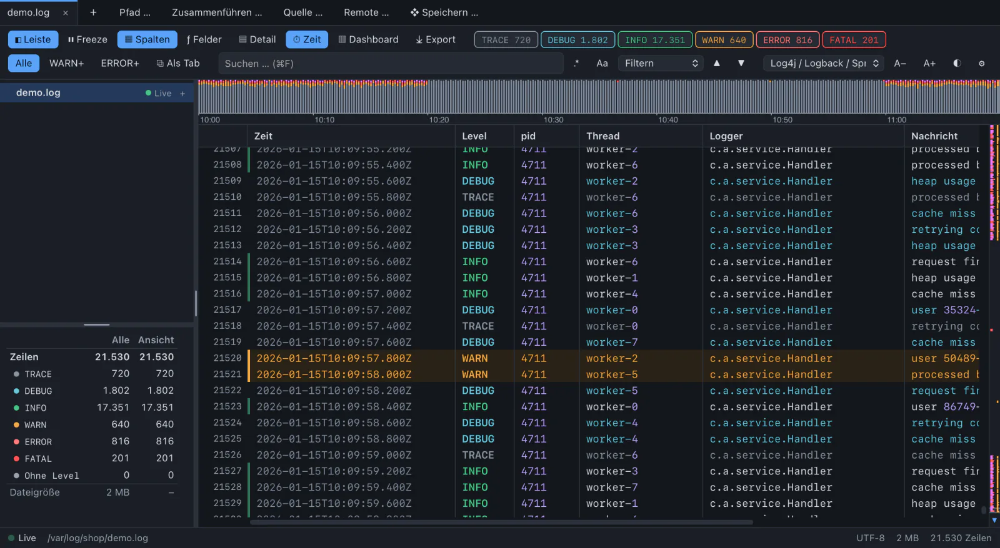
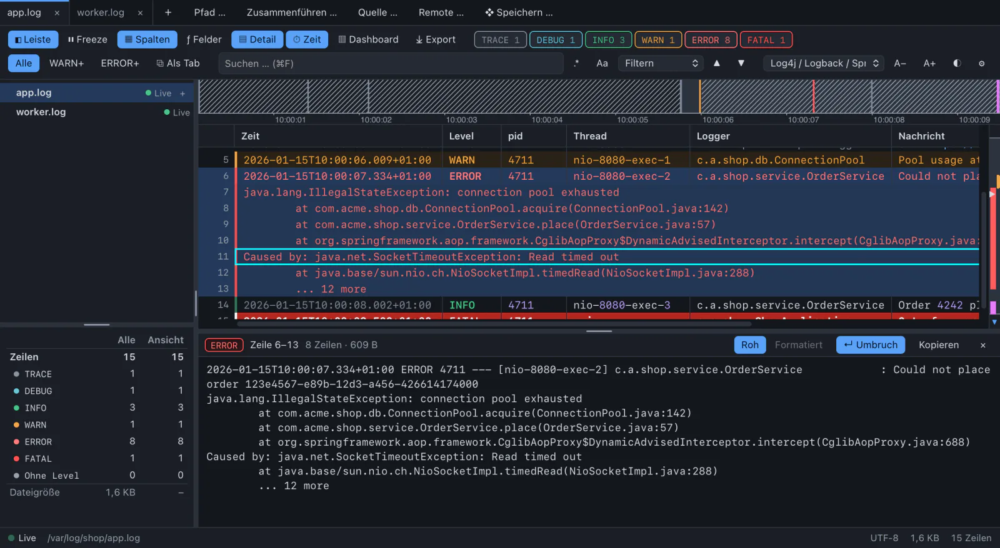
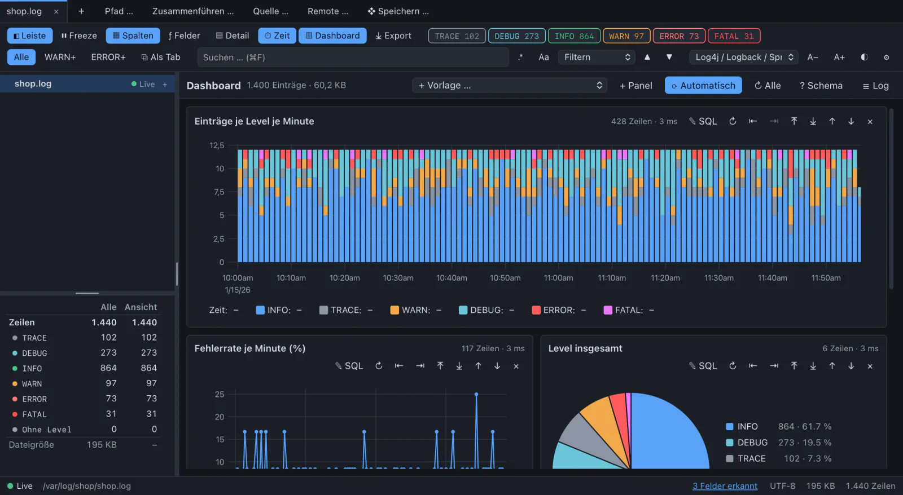
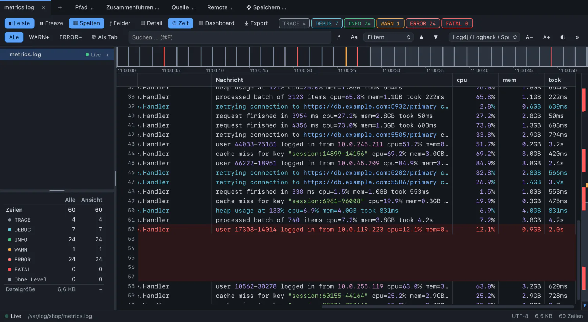

The Rust backend keeps 16 bytes per line in memory and leaves the rest on disk. That is why half a gigabyte feels like a small file.
25msuntil the first lines are on screen
2.2suntil 5.1 million lines are indexed
78MBof memory for the index of 500 MB
15msfor a level filter over all lines
500 MB, 5.1 million lines, Apple Silicon, release build. All measurements
INFO seven ways to find it
From “something is wrong” to the line that says why.
app.log






1 / 7
ERROR levels
Colour first. Stack traces in one piece.
TRACE to FATAL, with chips that count while the file grows. Continuation lines inherit the level of their entry, so a filter never tears an exception apart.
A recognised format becomes a table with one column per field: time, level, thread, logger, message.
TEW
WARN filter tree
AND, OR, NOT. On the whole entry.
Text or regex, levels, a field, a time span, a section between two markers. A request id in the head and “Timeout” in its stack trace match together.
Mark text and press a key to filter on it, or to exclude it.
IShift+I><
INFO filter tabs
Drill down, and keep every step.
A filter opens as a tab of its own and filters further: app.log › ERROR › OrderService › 4711. Change a filter above and every tab below follows live.
Cmd/Ctrl+Shift+T
FATAL timeline
See the outage before you read a line.
A strip above the log stacks the entries of the whole file over time. Peaks and bursts of errors stand out, a silence is hatched: “no entries 10:04–10:51”.
Click to jump there, drag a window and make it a filter.
Z
ERROR overview ruler
One error in five million lines is still a mark.
The bar right of the log shows where errors and warnings lie, as density and not as one solid colour. Bookmarks are flags, notes are diamonds.
This page has one too. Look right.
MNShift+M
DEBUG detail panel
The whole entry, formatted.
Head line and stack trace without the cut at the screen edge. Embedded JSON or XML is indented and coloured by its own tokenizer, so 64-bit ids stay exact.
DEnterG
INFO dashboard
Charts from SQL, on a log file.
Errors per minute, the error rate, took as mean and maximum. Panels start from templates and show their SQL to change. Click a bar to land on its first line.
Measurements in the text become columns of their own. The app suggests them on opening; units are converted, so took > 500 ms also finds 1.2s.

a.log + b.log → one
Merge files
Up to 16 logs in one tab, sorted by timestamp, each with a colour stripe. New lines keep coming in live.
❄ freeze
Freeze and follow
Stay at the end while you are there, scroll up and it pauses. Freeze holds a tab still while filters and search keep working.
.* Aa
Search
Filter or highlight, regular expressions, case, jump between matches. Full text over 5 million lines in 0.7 s.
⤓ txt · csv · jsonl
Export
The selection, the view or the whole file. Written by the backend in the background: 500 MB as text in half a second.
⚑ M · N
Bookmarks
One key sets a flag in the gutter and on the ruler, another jumps to the next. They survive in a workspace.
❖ .lcw
Workspaces
Files, merges, every filter tab, bookmarks, notes and layout in one file. Paths are kept relative too, so a folder with logs can be shared.
✎ notes · markdown · jira
Notes and sharing
Put a note on an entry, then copy lines with file, time span and filter as Markdown or Jira markup for the ticket.
WARN not every log is a file
Syslog, servers, databases. Same window.
Every source without a file writes into a spool on disk, and the app tails that like any log. So filters, timeline, dashboard, export and merge work for all of them.
Over the Model Context Protocol, Claude Code, Claude Desktop or Cursor see your tabs and use the app’s engines instead of reading whole files. The answer shows up in the window: a filter tab, a note, the line scrolled into view.
Off by default. No port while it is off. Opening files and exporting ask you first.